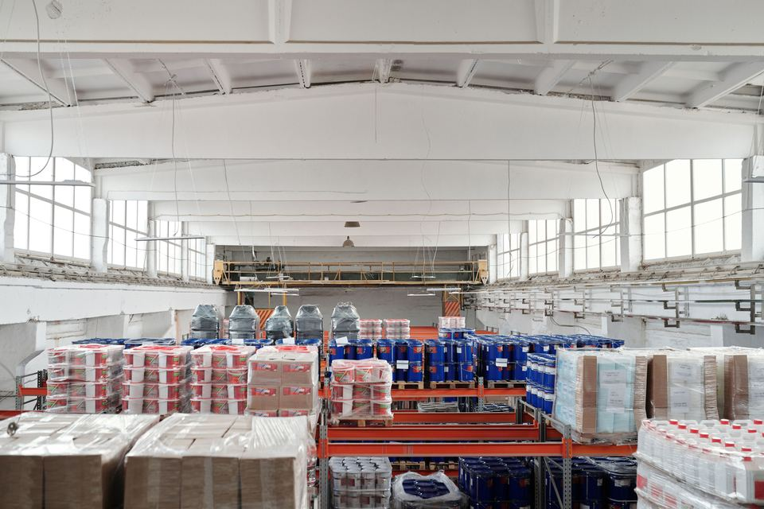

La industria se hace cargo de sus envases y lidera el cambio

En los últimos años, la UE ha cambiado la normativa. Envalora acompaña a las empresas hacia la sostenibilidad y a la adaptación a las nuevas obligaciones legales de envases
El último cuarto del siglo XX fue decisivo en el reciclaje y tratamiento de los envases industriales de forma regulada y a gran escala. Se consolidó durante los años 90, impulsado por las primeras normativas ambientales y la creación de los sistemas de responsabilidad ampliada del productor. Pero las exigencias legislativas han cambiado: las empresas tienen nuevas responsabilidades sobre los envases industriales y comerciales que ponen en el mercado. Para eso nació Envalora, un sistema colectivo de responsabilidad ampliada del productor (SCRAP) al servicio de las empresas productoras y de los poseedores finales de residuos de envases. Las acompaña para cumplir las normas con transparencia,…
Envalora, asociación sin ánimo de lucro, se ha consolidado como líder en cuota de responsabilidad de envases industriales con un 37,5% según los datos del MITECO, gracias a un modelo de gobernanza abierto y transparente, en el que las empresas adheridas participan directamente en las decisiones estratégicas. Mantiene unas tarifas competitivas y ajustadas a costes reales que permiten al mismo tiempo la bonificación a poseedores finales.